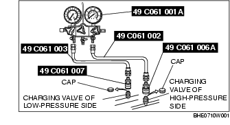

Refrigerant system general procedures
1. Fully close the valves of the SST (49 C061 001A).
2. Connect the SSTs (49 C061 002, 49 C061 003) to the high- and low-pressure side joints of the SST (49 C061 001A).

3. Connect the SSTs (49 C061 006A, 49 C061 007) to the ends of the SSTs (49 C061 002, 49 C061 003).
4. Connect the SSTs (49 C061 006A, 49 C061 007) to the charging valves.